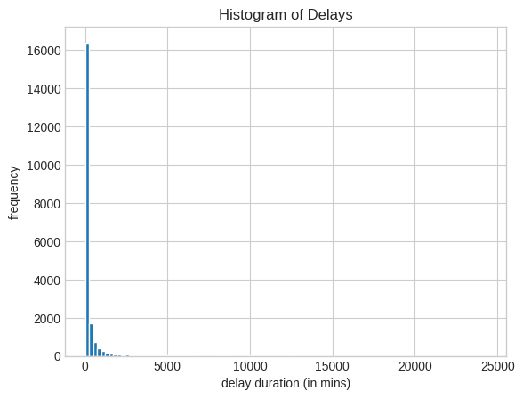
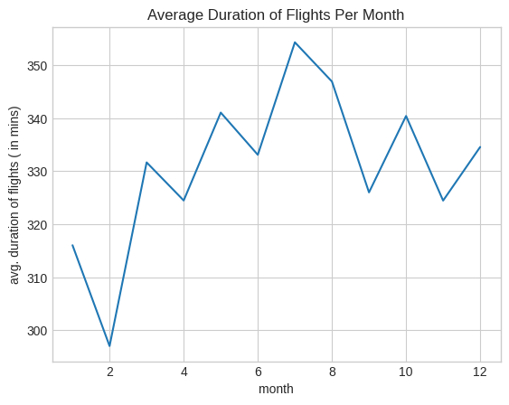

from datascience import *Section 1: Markdown Syntax
Subsection 1.1
The quick brown fox jumps over the lazy dog.
That was a really cool sentence!
Subsection 1.2: Itemized and Enumerated Lists
- It is very important to check the Binomial Conditions before using the Binomial Distribution!
- Failure to check the necessary conditions can lead to incorrect results.
- Incorrect results are not good!
Subsection 1.3: Typesetting Equations
The Pythagorean Theorem states that \(a^2 + b^2 = c^2\)
\[ f_X(x) = \frac{1}{\sigma \sqrt{2\pi}} e^{-\frac{1}{2} \left( \frac{x - \mu}{\sigma} \right)^2} \]
- Pythagorean Theorem: \(a^2 + b^2 = c^2\)
- Euler’s Identity: \(e^{i \pi} + 1 = 0\)
\[ f_X(x) = \begin{cases} \frac{1}{b - a} & \text{if } a \leq x \leq b\\ 0 & \text{otherwise} \end{cases} \]
\[\begin{align*} \overline{x} & = \frac{1}{n} \sum_{i=1}^{n} x_i \\ n \overline{x} & = \sum_{i=1}^{n} x_i \end{align*}\]
Section 1.4: Hyperlinks
Section 2: Importing and Manipulating Data
air = Table.read_table("https://pstat5a.github.io/Files/Datasets/air22.csv")To find the number of observational units, we simply count the rows in the table using the .num_rows method:
air.num_rows20345To find the number of variables (i.e. the number of columns in the data matrix), we use the .num_columns method:
air.num_columns21Following the hint, we can use the .labels method to list the column labels (i.e. variable names) of the data matrix:
air.labels('year',
'month',
'carrier',
'carrier_name',
'airport',
'airport_name',
'arr_flights',
'arr_del15',
'carrier_ct',
'weather_ct',
'nas_ct',
'security_ct',
'late_aircraft_ct',
'arr_cancelled',
'arr_diverted',
'arr_delay',
'carrier_delay',
'weather_delay',
'nas_delay',
'security_delay',
'late_aircraft_delay')To display only the arr_del15 column we can use the command:
air.column("arr_del15")array([ 7., 3., 14., ..., 3., 1., 17.])To find which years were included in the dataset, we display the year column of the data matrix:
air.column("year") # seems like only 2022 is included in the datasetarray([2022, 2022, 2022, ..., 2022, 2022, 2022])%matplotlib inline
import matplotlib
import matplotlib.pyplot as plt
plt.style.use('seaborn-v0_8-whitegrid')plt.hist(air.column("weather_delay"),
bins = 100,
edgecolor = "white");
plt.xlabel("delay duration (in mins)");
plt.ylabel("frequency");
plt.title("Histogram of Delays");
Here’s how we can easily find the answer to the question “how many observational units were recorded from Alaska Airlines?”
As mentioned in the lab handout, air.column("carrier") == "AS" returns a boolean vector with True elements corresponding to values in carrier that have values AS. Since True is encoded as 1 and False is encoded as 0 (as was discussed in a previous lab), summing up the elements in the array air.column("carrier") == "AS" will result in the total number of True elements; i.e. the number of flights that were maintained by Alaska Airlines.
sum(air.column("carrier") == "AS")975The code air.row(air.column(1) == 1) is selecting the rows of the air data matrix whose second column entry (i.e. month) entry is equal to 1; i.e. it returns the portion of the data matrix corresponding to flights taking place in January.
The code air.row(air.column(1) == 2)[6] returns the durations of flgihts that took place in February (i.e. the second month).
Thus, putting these two facts together, we can create a for-loop to give us the average duration of flights per month:
import numpy as np
means = []
for k in np.arange(1, 13):
means.append(np.nanmean(air.row(air.column(1) == k)[6]))plt.plot(np.arange(1, 13),
means);
plt.xlabel("month");
plt.ylabel("avg. duration of flights ( in mins)");
plt.title("Average Duration of Flights Per Month");